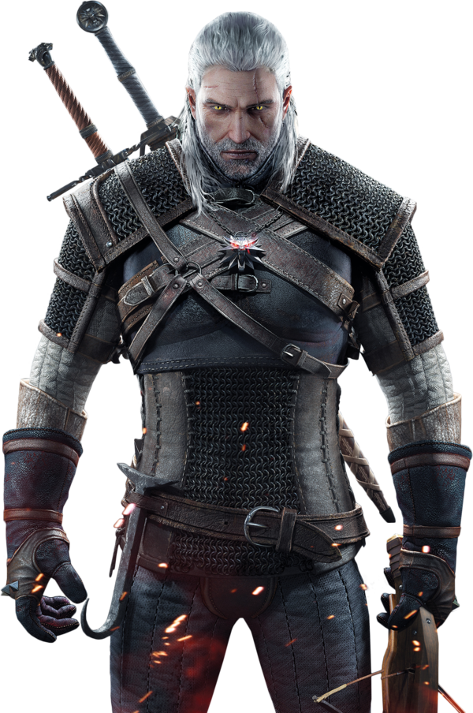
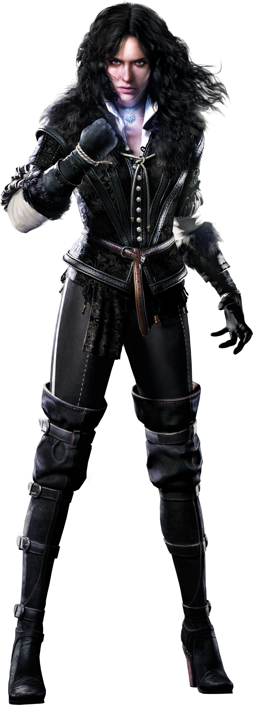
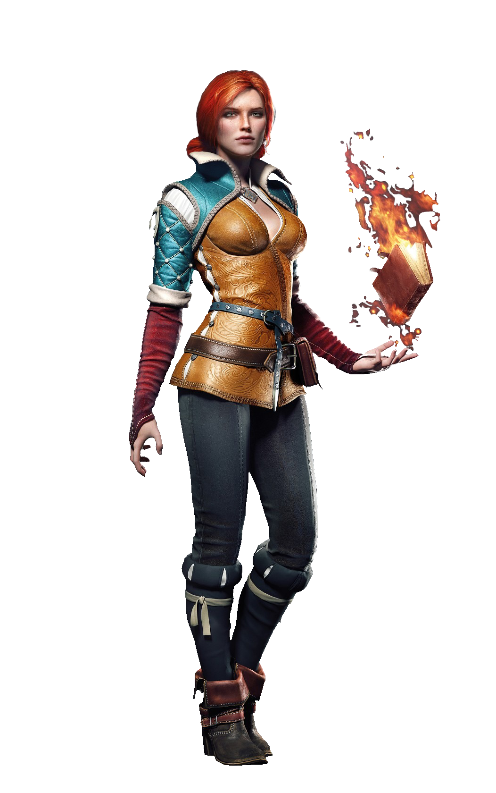
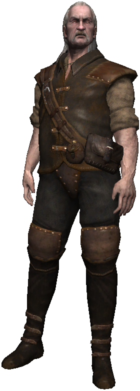

The Witcher 3 : Synopsis
Les Royaumes du Nord sont en perdition, affaiblis par les batailles contre Nilfgaard, bien plus puissant. Outre le manque de rois, une nouvelle menace bien plus dangereuse est apparue : la Chasse Sauvage, composée de terrifiants spectres chevauchant des destriers squelettiques, semant le chaos et enlevant de jeunes enfants sur leur passage. Personne ne sait comment les vaincre, ni quel est leur but. Toutefois, ils semblent en vouloir particulièrement à Geralt de Riv, et pour l'atteindre, ils sont prêts à jouer sur les sentiments du Loup Blanc en s'en prenant à ses proches. Geralt s'est remis de son amnésie, et il part à la recherche des gens qu'il aime pour les protéger et ce, quel qu'en soit le prix.

The Witcher 3 : Les personnages
Les personnages principaux
Geralt de Riv
Geralt de Riv est le fils de la magicienne Visenna et d'un guerrier nommé Korin. C'est un expert à l'épée, et un sorceleur. Avec son cheval Ablette (tous ses chevaux se nomment ainsi), il parcourt le monde en tant que tueur à gages de monstres.
Il incarne le personnage principal de La Saga du sorceleur : livres écrits par Andrzej Sapkowski, d'adaptations télévisées et bien entendu des jeux vidéo.
Geralt ne vient pas de Riv, c'est un nom qu'il a choisi lui-même car considéré comme pratique. Notre héros est même allé jusqu'à prendre un accent Rivian pour paraître authentique.
Dans ce troisième opus de The Witcher, Geralt a complétement récupéré sa mémoire, et continue sa chasse pour retrouver sa bien-aimée Yennefer et d'autres anciens amis. Vous jouerez la conclusion des aventures de Geralt dans un monde ouvert.

Ciri princesse de Cintra
Cirilla Fiona Elen Riannon (connue sous le nom de Ciri ou le Lionceau de Cintra) est née en 1251, vraisemblablement durant les fêtes de Belleteyn. Elle est la princesse et l'héritière de Cintra, fille de Paetta et de Duny (le Hérisson d'Erlenwald) et la petite fille de la reine Calanthe.
Après la mort de ses parents et de sa grand-mère, son pays est ravagé par la guerre. Geralt et Yennefer la prennent alors sous leur aile, à Kaer Morhen, où elle se forme pour devenir sorceleurse. Elle a un fort potentiel magique, grâce à ses origines elfiques.
Dans The Witcher 3, Geralt est à sa recherche. Vous trouverez des détails sur ce qui lui est arrivé, et à chaque élément découvert, vous le jouerez en tant que Ciri : au lieu découter la narration de son histoire, vous la vivrez!
Les personnages secondaires
Yennefer de Vengerberg
Yennerfer de Vengerberg, amoureuse de Geralt de Riv et mère adoptive de Ciri, était la plus jeune membre du Conseil des Magiciens. Connue pour sa beauté, elle a un quart de sang elfique. Dans la cinématique d'introduction de ce troisième volet de The Witcher, on la découvre fuyant à travers des champs de bataille, se défendant grâce à ses pouvoirs magiques. Geralt, accompagné de Vesemir (son maître à l'école des sorceleurs), suit sa piste dans l'espoir de la retrouver.
Triss Merigold
Triss Merigold a une longue hstoire liée à Geralt. De plus, elle l'aime mais son influence politique et ses responsabilités l'éloignent souvent de lui. Elle est capable de prouesses en magie, mais elle y est aussi allergique : pour guérir de blessures elle doit donc procéder normalement ou utilises des potions, plutôt qu'utiliser des sorts de soins. Dans The Witcher 3, il a été révélé que Geralt et Triss se réuniront longtemps après les événements du second épisode, mais son rôle n'a pas été complètement identifié.
Vesemir
Vesemir est le sorceleur le plus ancien et le plus expérimenté encore en vie. Il est le seul à avoir survécu à la première attaque sur Kaer Morhen. Il fait figure de père pour Geralt et les autres sorceleurs. C'est un excellent escrimeur et il possède une grande connaissance des monstres (savoir qu'il a transmis à Ciri). Selon Geralt, il serait plus âgé que la forteresse de Kaer Morhen elle-même. Mais malgré son âge, il est encore vif et robuste.